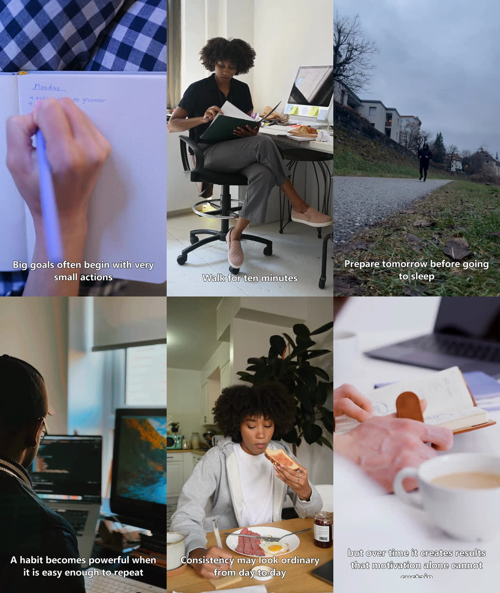
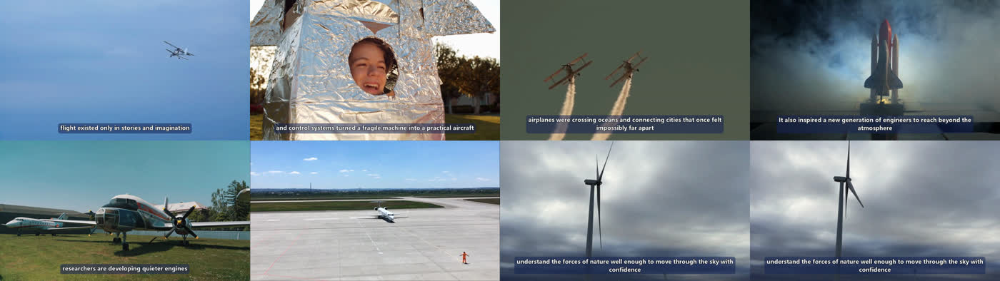
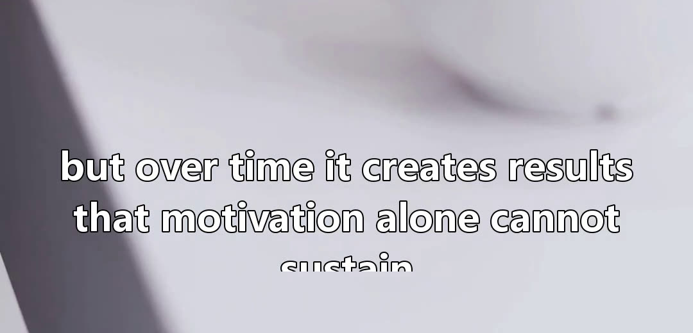
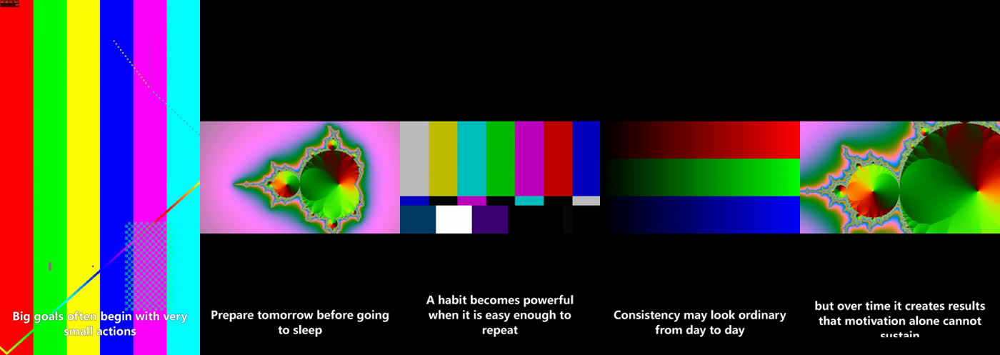

Hands-on teardown · 28 Jul 2026 · harry0703/MoneyPrinterTurbo v1.3.3 · run on this server
It works — I installed it, ran it, and it produced a real 1080×1920 MP4 with voiceover and burnt-in subtitles. But it is not a video generator. It is a stock-footage assembly line, and its default output is the exact pattern YouTube's monetisation policy names as ineligible. The tool is real. The business model in its name is not.
That first sliver is everything you would call AI. Voice synthesis took roughly one second; subtitle timing was free, because it reuses the timestamps the voice engine already returned. The remaining 98% is ffmpeg re-encoding somebody else's stock footage. That single fact explains most of what follows.
Verdict
Does it actually work?
Yes — verified
Installed from source, ran end to end, got a valid H.264/AAC MP4 at 1080×1920 with correct SRT timings. No hand-holding, no crashes. The engineering is genuinely competent.
Is it a gimmick?
The name is
The software is not a toy. But nothing in it prints money — it removes the editing labour from a video, which is the cheapest part of the job. Distribution is still the whole problem.
Faceless channel for ad revenue?
Don't
Its house style — template script, stock clips, text-to-speech, identical captions — is the specific thing YouTube's inauthentic-content policy lists as not eligible. That road is closed.
Mechanism
The single biggest misconception on X is that this thing generates video. It does not. There is no video model anywhere in the codebase. It writes a script, turns that script into search keywords, downloads free stock clips that match those keywords, reads the script aloud, and stitches the result together. Every frame you see was shot by a stock photographer and is equally available to everybody else running this tool.
Read that list again with an operator's eye. Steps 1 and 2 cost fractions of a cent. Steps 3, 4 and 5 are free. Step 6 is the expensive one, and it is not AI — it is your CPU transcoding video for three minutes. The moat everyone imagines here does not exist: every user of this tool is drawing from the same three stock libraries with the same keyword logic and the same caption style.
Benchmark
I ran it on a 6-core CPU-only box with 14 GB of RAM — no GPU, deliberately, because that is the realistic setup. Both runs produced valid, playable files.
| Run | Output | Wall time | Where the time went |
|---|---|---|---|
| 20-second vertical | 1080×1920 · 20.03 s · 4.8 MB | 182 s | 63% resizing clips · 32% burning captions · 5% everything else |
| 47-second vertical | 1080×1920 · 46.7 s · 10.8 MB | 350 s | Real stock footage as input, otherwise identical settings |
Both runs land around 8–9× real time: a minute of finished video costs roughly eight minutes of machine. Back to back that is about 20 videos an hour at 20 seconds each, or about 10 an hour at 45–60 seconds — and 60 seconds is the length TikTok requires before it pays anything at all. Fast enough to be interesting; slow enough that "generate a thousand videos" is a fantasy without a fleet of machines. A graphics card buys faster encoding, not better output.
Below is the maintainer's own showcase reel — his best foot forward, published in the project README. Six frames sampled evenly across a 19-second video.

Quality tracks how concrete your topic is — a subject that maps onto stock-library categories does better than an abstract one. But "better" is not "good". Here is the other showcase video, on about the most concrete subject available, sampled across all 59 seconds.

This is the maintainer's own selected showcase, on the friendliest possible topic. It is a fair picture of the ceiling: roughly half the shots support the sentence being read, and the tool cannot tell which half. Nothing in the pipeline checks whether a clip depicts what the narrator just said.
Defects
These are not README caveats. Each one I either reproduced on this machine or found in the shipped code.
When a subtitle line wraps to three lines in the default bottom position, the third line renders below the visible frame. I hit this on my very first run — and then found the same bug in the maintainer's own showcase video, published on the project's front page. The word "sustain" is simply missing from the last shot.
Fix: cap the characters per subtitle, raise the subtitle position, or drop the font size. Check every video before it goes out.

The project ships 29 music tracks, 56 MB, each exactly three minutes, with all identifying metadata stripped. The README says outright that this is "default music from YouTube videos" and asks you to delete it if there are copyright issues. Background music is on by default.
Put that into a monetised video and you are handing a content-ID claim to whoever owns the track — on every video you have ever posted with it.
Fix: delete resource/songs before the first run and point it at licensed music, or turn music off.
When a clip's shape does not match your output shape, it is scaled to fit and centred on a black background. There is no crop-to-fill and no blurred backdrop — the two things a human editor would reach for. On a vertical video, a horizontal clip becomes a small letterboxed rectangle floating in black.
It avoids this with Pexels by only accepting clips that are exactly 1080×1920, which quietly throws away most of the search results and narrows the pool everyone is drawing from even further.
Fix: crop-to-fill is a small change to one function. Worth making before any volume run.
The free, no-account LLM option that the viral posts point to now returns api_key is not set — the provider started requiring registration. Voice and subtitles are still genuinely free. The script and keyword steps now need either a paid API key or a model running locally on your own hardware.
Fix: either accept the cent-level API cost, or supply your own scripts and skip the LLM entirely — which you should be doing anyway.
The tool asks an LLM for search terms, then trusts the stock site's search. Nothing checks whether the returned clip actually depicts the sentence being narrated. On concrete topics this is fine. On anything abstract you get filler that contradicts the voiceover — which is exactly what makes AI shorts feel cheap.
Fix: write scripts around things that can be filmed. Concrete nouns in, usable footage out.

Shape
You asked which one we would build. We do not have to choose — the project already has four front doors onto the same engine, and the right answer depends on who is driving it.
| Way in | What it feels like | Right for |
|---|---|---|
| Browser interface | A local web page with forms and previews. Runs on your own machine, opens in your browser. | You or a VA making videos by hand, one at a time |
| REST API | A server that takes a job and returns a file. No screen involved. | Our case — volume, on a server, unattended |
| Command line | One command, one video. Scriptable, schedulable. | Nightly batches, cron jobs |
| Docker | A sealed box with ffmpeg and Python already inside. | Deploying it somewhere clean without a fight |
It is not a hosted product. There are no user accounts, no login, no billing, no per-customer isolation, and jobs run on whatever machine you started it on. If we ever wanted to sell this as a web app to other people, that is the work — the video engine would be the part we did not have to build.
My recommendation: run it headless on a server via the API, with our own thin control page in front of it. The browser interface is fine for a first look, but it is a single-user tool and it ties a video render to somebody keeping a tab open.
Cost
| Requirement | Minimum | What I used |
|---|---|---|
| Processor | 4 cores | 6 cores |
| Memory | 4 GB | 14 GB |
| Graphics card | Not required | None — CPU only |
| Disk | ~5 GB | Plus roughly 25 MB per finished video |
| Software | Python 3.11 or newer, and ffmpeg. Both already installed here. | |
| Service | Needed? | Cost | Note |
|---|---|---|---|
| Stock footage | Yes | Free | Free account with Pexels, Pixabay or Coverr. I can set these up. |
| Voice | Yes | Free | Microsoft Edge's voices. No account, no key, no quota I hit. |
| Subtitles | Yes | Free | Comes out of the voice engine for nothing. |
| Script writing | Optional | Under a cent | A few hundred words per video. Skip it entirely by writing your own scripts. |
| Music | Optional | Varies | The bundled tracks are unusable. Licensed music or none. |
| Auto-posting | Optional | $0 → $24/mo | Third-party service. Free tier is 10 uploads a month and excludes TikTok; the paid tier lifts the limit. |
| Compute | Yes | ~3 min CPU | The genuine cost. On a server you are paying for time, not tokens. |
So the marginal cost of a video is effectively three minutes of CPU and a fraction of a cent. That is the real and only impressive number in this project. It is also why the output has no scarcity value — it costs everybody else the same.
If this goes past an experiment, the bill does not move to AI. It moves to two places:
Looking different. Right now every video made with this tool shares one caption style, one pacing, one library. As more people run it, "made with MoneyPrinterTurbo" becomes a recognisable look, and a recognisable look is what gets pattern-matched by platform enforcement. Escaping that means our own footage, our own captions, our own hooks — real work, not a config change.
Distribution. Accounts, warm-up, posting infrastructure, and somebody watching what lands. The tool solves the part that was never the bottleneck.
Money
Start with the constraint everything else has to route around. YouTube's monetisation rules were rewritten to name this exact output. Under the policy now called inauthentic content, this is listed under what is not allowed:
"AI-generated content made with generic or unoriginal templates giving the impression of mass production without adding the creator's original, authentic insights or perspective."
YouTube channel monetisation policies — inauthentic content
That is a description of the default settings. So the play is not to argue with it — the play is to stop treating the video as the product and start treating it as the delivery van. A video that sends someone to a page does not need to be monetised at all.
Best fit
Point the tool at commercial-intent and brand queries where video results appear but nobody has bothered to make one. A short, on-topic video on an uncontested query can surface fast, and the money is in the description link and the landing page — not in ad revenue, so none of the monetisation rules apply to us.
This suits us specifically because we already own the offers, the landing pages and the keyword research. The video is the one asset we were not producing, and now it costs three minutes of CPU.
Why it wins: no monetisation approval needed · no follower threshold · no account age · works from video one
Second
Organic reach, no revenue share, everything routed to our own page. Both platforms will bury content they judge unoriginal, so this only works if we do the work the tool skips: a real hook in the first second, our own captions, and scripts written for a specific audience rather than generated from a topic.
Watch for: TikTok pays nothing under 60 seconds and requires 10k followers · Meta's programme requires content original to the creator
Third
The clean version of this business is charging somebody else for finished videos. Local businesses, coaches, e-commerce sellers — they need weekly short-form and they do not have an editor. The tool collapses your cost to minutes; the price is whatever the client would otherwise pay a freelancer.
The catch is that the raw output is not good enough to hand a paying client, so this only works with a human pass on top: real footage of their product, a proper hook, tightened captions.
Reality check: this is a service business with a fast tool inside it, not a passive income machine
Do not
This is what every viral post is selling and it is the one path the platforms have explicitly closed. Building channels on templated stock-and-voiceover shorts means building on the exact pattern the policy names, with a strike system attached. Any channel that got monetised is one enforcement pass from losing it, and the assets are not portable.
Verdict: the effort is real, the compliance risk is total, and the asset can be deleted by someone else's policy update
Next
The tool is already installed and working here. Nothing below needs a purchase.